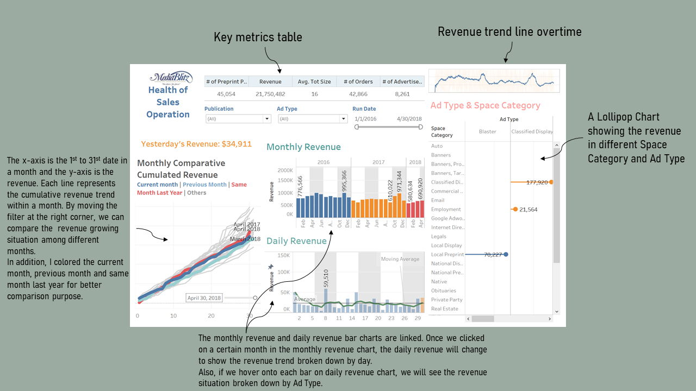
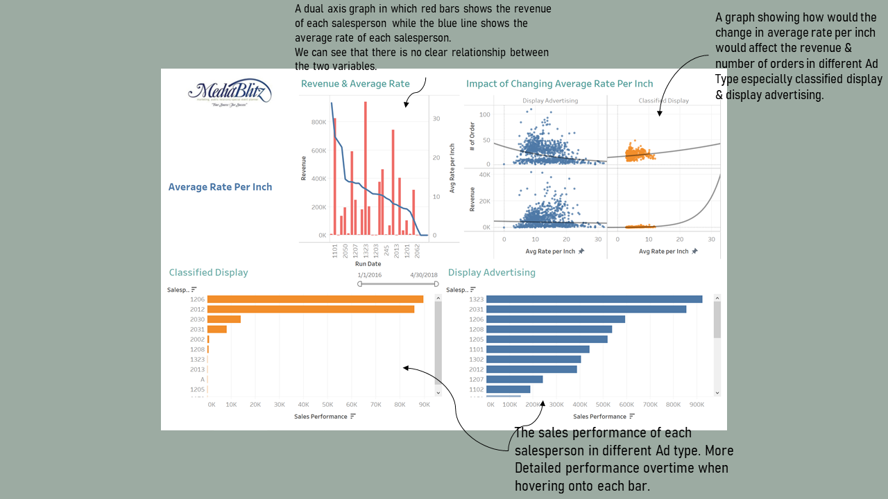
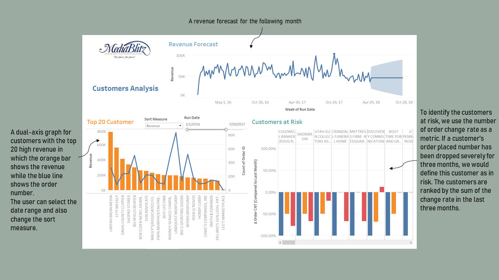
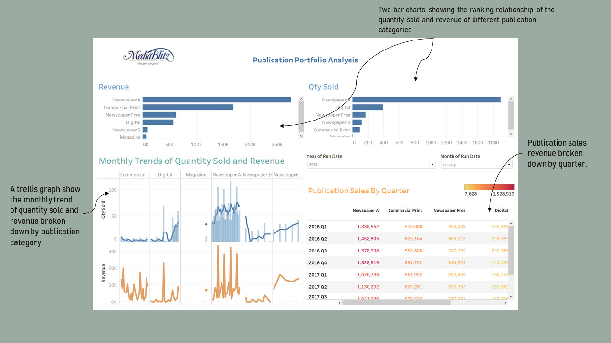
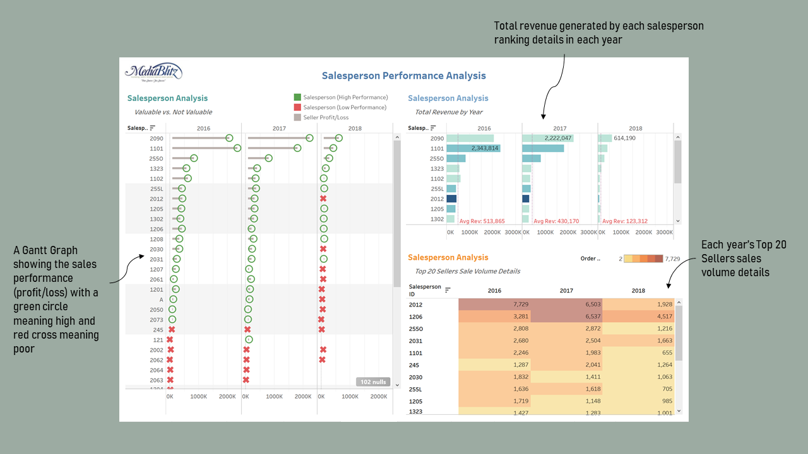
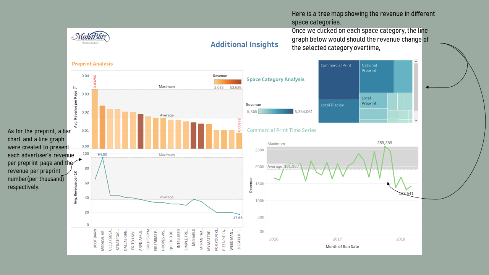

Author: Yun (Jessica) Yan
Co-workers: Weiyi Zhao, Dijia Tang, Zhijing Zhao, Rebecca Liu
Like many traditional media companies, Daily Media Blitz, a media company based in Utah, has been in decline for over a decade. In their portfolio, the company has two newspapers, a free market newspaper, a website, a magazine, a commercial printing operation and a digital agency. Much of their revenue is derived from selling advertising— though that has changed somewhat in the last few years since a digital agency was created to sell digital advertising and services (SEO, website design, social media management, etc.) Commercial printing provides a foundation of steady income. While it has been stable, there is little margin and Blitz would need to make a significant investment to increase business. The hope of the company was to replace the lost print revenue with new streams of revenue coming from the digital agency. I intend to provide daily in-time dashboards using the daily transactional information (1/1/16 – 5/1/18).
Health of Sales Opearation
I created a daily dashboard that provides Blitz with daily updates on the health of his sales operation in total and by product.
First of all, the user is able to get a sense of some key metrics and the revenue change overtime quickly. Besides, with the monthly comparative cummulated revenue graph on the left side, we can easily know that what kind of position this month’s sales is in and revise the strategy plan timely. We can see from the graph that the current month cummulated sales performance is better than last month but worse than the same month in the last year, and thus we have a direction to take some actions and further improve the performance. Moreover, with the linked interactive monthly and daily revenue graphs, it would be convenient for us to find out the dates that cause the bad performance of certain months. For example, we can know that the revenues in 7th, 14th and 21st this month are quite low compared to other dates. We may want to dig a little bit deeper on that.
Average Rate Per Inch
Based on the initial dashboard, I was asked to take a look and advise on another data point— “total size”. The Blitz’s Director of Sales, Roy L. Payne, is convinced that lowering the average rate per inch for classified display and display advertising ad types is generating a greater quantity of orders and driving overall revenue higher. Dick Tate, Director of Finance, is not convinced. He is warning John that lowering the average rate the last eight months has not caused increased quantities. In fact, he has stated that “our best customers are now paying less per ad and it is jeopardizing future revenues.”
Therefore, I prepare a visualization that will help Blitz understand what is happening with average rate for classified display and display advertising in the newspaper and magazine publications.
According to our first chart, there is no clear relationship between the average rate per inch (the blue line) and revenue amount (the red bar). Then, the scatter plot shows that the influence of lowering the average rate per inch may vary based on advertisement type. The trendline for classified display shows that lowering average rate per inch leads to the decrease of both the order count and the overall revenue. On the contrary, by lowering average rate per inch for the display advertising, the order count and revenue increase slightly.
So we think that neither Roy nor Dick is correct. John should set different strategies about the average rate per inch based on the advertisement type such as increasing average rate for classified display product and decreasing the rate for display advertising in the newspaper and magazine publications.
To figure out the performance of the salesperson on each ad type, we first calculate the overall average rate per inch for classified display (3.859) or display advertising (10.646). Then we multiply the overall level of average rate per inch by the number of orders made by each salesperson to show their sales performance precisely. Finally, by hovering on the bar in these two charts, it will show the time series of revenue for each salesperson. We could also find out that the sellers tend to sell more on the ad type of display advertising whose average rate per inch is nearly 3 times the average rate for classified display.
Customer Analysis
For the customer analysis, we want to find out who are the top 20 customers and how has their spending changed over time. In addition, we want to predict the future changes and point out customers at risk.
We made a set on the filter card to only select the top 20 customers based on the revenue they generated, and the top 20 selection is linked with the change of the Run Date field. We can select the time range to see the revenue of top 20 customers in that period. The revenue of each customer is represented by a bar chart while the line graph illustrates the total number of Orders.
When hovering onto the bars, we can see a graph showing the order quantity change over years and the forecast for each customer. We provide options for the user to choose whether to sort by the revenue or the order ID.
Also, we provide another graph including the overall revenue trend line and forecast line for the top 20 customers over time.
As for the customers at risk, we define it as the ones whose revenue has been decreasing over the last three months. We provide a bar chart with the bar in each color showing the percentage difference between each month and its previous month for the last three months. Additionally, this graph is sorted by the sum of all three differences, and the customer who ranks first should be the one at most risk. Under our definition, we can see that the Coldwell Banker/Doug Russell is the customer that we should pay most efforts to save since the order number from this customer is significantly declining.
Publication Portfolio Analysis
We created a publication portfolio analysis dashboard to help Blitz understand how his publications are performing.
There are 6 types of publication in this publication portfolio: Newspaper A, Newspaper B, Newspaper free, Digital, Commercial print and magazine.We made two bar charts for revenue and quantity sold for each publication type. By clicking each bar in the “Revenue” or “Qty Sold” chart, we get corresponding monthly trends of quantity sold and revenue of each publication type. Additionally, in the “Qty Sold” of “Monthly Trends of Quantity Sold and Revenue”, we added a line indicating moving average of quantity sold to show the data stability within that specific month.
“Publication Sales by Quarter” displays publication sales of each publication type by quarter throughout the entire duration covered by our analysis. Two filters, “Month of Run Date” and “Year of Run Date” allow users to select date range. These two filters are applicable to all charts in our dashboard.
Based on our charts, we can see that Newspaper A is Blitz’s “star” product which generates both the most revenue and the most orders. Looking into the monthly pattern of Newspaper A, we see that it is sold most at the end of the week. To boost sales, John may want to give promotions during the week to incentivize customers to buy more Newspaper A on weekdays.
Another interesting insight is that although Digital generates the second highest sales in terms of quantity sold. However, it ranks at the lower end of the spectrum in terms of revenue. This means that Digital, while seems to be popular, has a relatively low power in affecting revenue. Diving deeper into the monthly trend, we can see that in 2016 and 2017, most of the orders of Digital are placed in the second half of the month. However, that pattern seems to have changed in 2018, as sales of Digital has become less volatile during the month. This reveals that customers are switching to digital platforms for information.
Lastly, we suggest John place more emphasis on Commercial Print, which generates the second highest revenue with the second lowest order volume. This relationship shows that Commercial Print has a relatively high efficiency in terms of generating revenue. The monthly trend shows that the sales of Commercial Print have been generally stable throughout the time we investigated. John might need to consider organizing promotional campaigns to attract more customers to buy Commercial Print because it has high value to his business.
Salesperson Performance Analysis
In the salesperson analysis, we intend to help Blitz understand how its sellers are impacting the business. Assuming each seller makes $75k annually (with benefits), we want to figure out which sellers are most valuable to Blitz.
We used a Gantt chart to show the performance of individual salesperson. The green circle shows that the revenue generated by the seller in the particular year exceeds his annual salary which is $75k, and the red cross shows otherwise. The length of grey lines represents the gap between total revenues earned by a salesperson and his annual salary.
Then we filtered the top 10 salespersons and plots bar charts to show the relationship between the order count and the total revenue made by each seller, further broken by each year. The density of the color represents the number of orders and the height of the bar represents the total amount of revenue. Therefore, a long bar in light blue means that the salesperson generated a large amount of revenues through a small number of sales. We also made a reference line to show the deviation between the average sales revenue and their individual performance.
The table shows the revenue details for the top 20 sellers to allow the audience to quickly locate the precise amount of revenue generated by any one of the top 20 sellers in each year. The density of the background color of each table cell will provide the audience with a clear understanding of each salesperson’s order count.
We can see that the seller 2090 is the leading character that can bring high revenue for Blitz. However, the list of top sellers for the revenue are not the same as the list of top sellers for the sold quantity. We would suggest the employees to share their experience in order to promote high performance on both the revenue and the sales volume.
Preprint & Space Category Analysis
First of all, we conducted a preprint analysis with a bar chart and a line chart respectively exploring the average revenue per page and average revenue per thousand preprint for each customer. We can see that the two graphs show basically the same trend. Thus, we can know that the advertiser with higher average revenue per page would tend to have a higher average revenue per thousand preprint.
Then, we performed a space category analysis based on revenue generated per category using tree map. We can use the filter to select the category we interested to show the trend of revenue over time for that specific category. Commercial Print is the category with highest revenue.
Limitations
There is some other data I would have liked to have had to help me with my analysis.
- More Detailed information about the salesperson’s salary and benefits to decide the most valuable employee. (like salesperson’s name)
- Cost / Profit / Discount information on each order to decide whether this order is truly valuable
- More metrics apart from revenue to better measure the performance of each order, such as customer satisfactory / rating
- Comparable data of Competitors and industry average